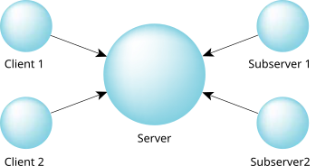

Let's now look at the server/subserver model, and then we'll combine it with the multiple threads model.
In this model, a server still provides a service to clients, but because these requests may take a long time to complete, we need to be able to start a request and still be able to handle new requests as they arrive from other clients.
If we tried to do this with the traditional single-threaded client/server model, once
one request was received and started, we wouldn't be able to receive any
more requests unless we periodically stopped what we were doing, took a
quick peek to see if there were any other requests pending, put those on
a work queue, and then continued on, distributing our attention over the
various jobs in the work queue.
Not very efficient.
You're practically duplicating the work of the
kernel by time slicing
between multiple jobs!
Imagine what this would look like if you were doing it. You're at your desk, and someone walks up to you with a folder full of work. You start working on it. As you're busy working, you notice that someone else is standing in the doorway of your cubicle with more work of equally high priority (of course)! Now you've got two piles of work on your desk. You're spending a few minutes on one pile, switching over to the other pile, and so on, all the while looking at your doorway to see if someone else is coming around with even more work.
The server/subserver model would make a lot more sense here. In this model, we have a server that creates several other processes (the subservers). These subservers each send a message to the server, but the server doesn't reply to them until it gets a request from a client. Then it passes the client's request to one of the subservers by replying to it with the job that it should perform. The following diagram illustrates this. Note the direction of the arrows—they indicate the direction of the sends!

If you were doing a job like this, you'd start by hiring some extra employees.
These employees would all come to you (just as the subservers send
a message to the server—hence the note about the arrows in the diagram above),
looking for work to do.
Initially, you might not have any, so you wouldn't reply to their query.
When someone comes into your office with a folder full of work, you
say to one of your employees, Here's some work for you to do.
That employee then goes off and does the work.
As other jobs come in, you'd delegate them to the other employees.
The trick to this model is that it's reply-driven—the work starts when you reply to your subservers. The standard client/server model is send-driven because the work starts when you send the server a message.
So why would the clients march into your office, and not the offices
of the employees that you hired?
Why are you arbitrating
the work?
The answer is simple: you're the coordinator responsible
for performing a particular task.
It's up to you to ensure that the work is done.
The clients that come to you with their work know you, but they don't
know the names or locations of your (perhaps temporary) employees.
As you probably suspected, you can certainly mix multithreaded servers
with the server/subserver model.
The main trick is going to be determining which parts of the problem
are best suited to being distributed over a network (generally those
parts that won't use up the network bandwidth too much) and which
parts are best suited to being distributed over the SMP architecture
(generally those parts that want to use common data areas).
So why would we use one over the other?
Using the server/subserver approach, we can distribute the work over
multiple machines on a network.
This effectively means that we're limited only by the number of available
machines on the network (and network bandwidth, of course).
Combining this with multiple threads on a bunch of SMP boxes distributed
over a network yields clusters of computing,
where the
central arbitrator
delegates work (via the server/subserver
model) to the SMP boxes on the network.